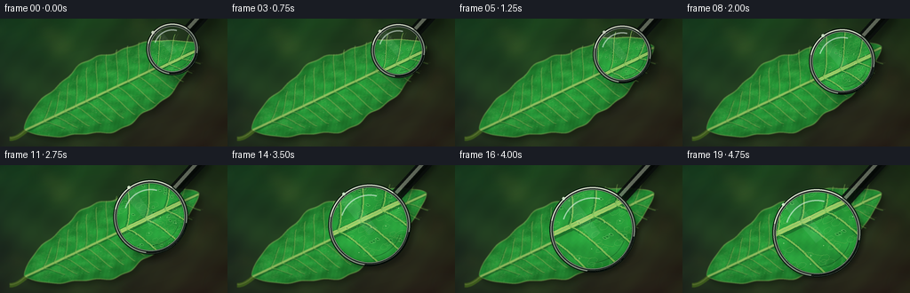
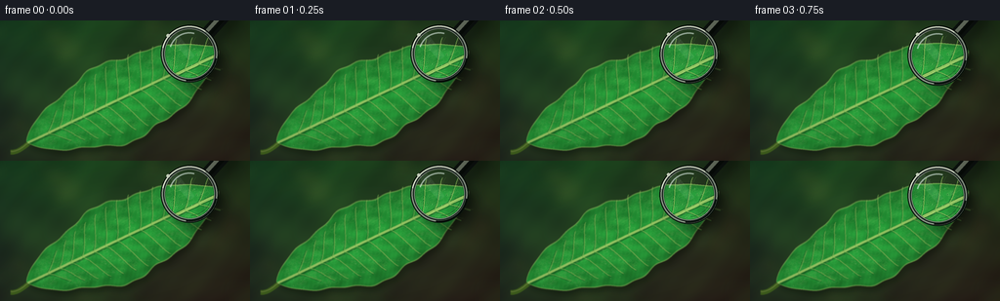

CODING AGENTS AS PIXEL WORLD MODELS
traex/GPT-5.6-Sol · phygen_068
点击播放 · 原生 RGB 像素
逐轮保存的候选
回放视频、检查图与代码变化。
每份候选均可单独播放。实际图片检查记录在下方工具轨迹中。
候选 01播放与检查图
点击播放 · 原生 RGB 像素


展开代码变化
--- 上一保存版本
+++ 本次保存版本
@@ -0,0 +1,292 @@
+from pathlib import Path
+import math
+import numpy as np
+from PIL import Image, ImageDraw, ImageFilter
+import artifact_io
+
+# A deterministic, fully procedural macro shot.
+ROOT = Path(__file__).resolve().parent
+W, H, N, SS = 256, 144, 20, 4
+w, h = W * SS, H * SS
+rng = np.random.default_rng(6801)
+
+
+def smoothstep(v):
+ v = np.clip(v, 0.0, 1.0)
+ return v * v * (3.0 - 2.0 * v)
+
+
+def layer():
+ return Image.new("RGBA", (w, h), (0, 0, 0, 0))
+
+
+def pt_along(s, q=0.0):
+ """Leaf-local (length, crosswise) to supersampled canvas position."""
+ p = leaf_center + axis * s + normal * q
+ return tuple(p * SS)
+
+
+def bezier(draw, p0, p1, p2, p3, fill, width):
+ ts = np.linspace(0, 1, 35)
+ points = []
+ for t in ts:
+ z = 1-t
+ p = z**3*np.array(p0) + 3*z*z*t*np.array(p1) + 3*z*t*t*np.array(p2) + t**3*np.array(p3)
+ points.append(tuple(p*SS))
+ draw.line(points, fill=fill, width=max(1, int(width*SS)), joint="curve")
+
+# Coordinates in final-pixel units, evaluated on a 4x supersampled grid.
+yy, xx = np.mgrid[0:h, 0:w].astype(np.float32)
+X, Y = xx / SS, yy / SS
+
+# --- quiet woodland floor, deliberately shallow-focus ---
+rad = np.sqrt(((X-128)/181)**2 + ((Y-71)/108)**2)
+base = np.zeros((h, w, 3), np.float32)
+base[..., 0] = 31 + 12*(Y/H) + 8*(X/W) - 9*rad
+base[..., 1] = 50 + 17*(1-Y/H) + 9*np.sin(X/47) - 8*rad
+base[..., 2] = 29 + 8*(1-X/W) - 5*rad
+mottle = (np.sin(X*.073 + np.sin(Y*.047)*1.8) +
+ .55*np.sin(Y*.119-X*.037) + .32*np.sin(X*.211+Y*.173))
+base[..., 0] += 2.0*mottle
+base[..., 1] += 4.2*mottle
+base[..., 2] += 1.3*mottle
+base = np.clip(base, 0, 255).astype(np.uint8)
+bg = Image.fromarray(base, "RGB").convert("RGBA")
+
+# Large soft circles read as sunlight filtering through foliage.
+bokeh = layer(); bd = ImageDraw.Draw(bokeh, "RGBA")
+for _ in range(30):
+ cx, cy = rng.uniform(-12, W+12), rng.uniform(-10, H+10)
+ rr = rng.uniform(4, 18)
+ if rng.random() < .38:
+ col = (190, 174, 76, int(rng.uniform(8, 25)))
+ else:
+ col = (74, 151, 69, int(rng.uniform(7, 22)))
+ bd.ellipse(((cx-rr)*SS, (cy-rr)*SS, (cx+rr)*SS, (cy+rr)*SS), fill=col)
+bg = Image.alpha_composite(bg, bokeh.filter(ImageFilter.GaussianBlur(7*SS)))
+
+# --- diagonal leaf silhouette and chlorophyll shading ---
+leaf_center = np.array([126.0, 79.0])
+angle = math.radians(-25.5)
+axis = np.array([math.cos(angle), math.sin(angle)])
+normal = np.array([-axis[1], axis[0]])
+dx, dy = X-leaf_center[0], Y-leaf_center[1]
+longi = dx*axis[0] + dy*axis[1]
+perp = dx*normal[0] + dy*normal[1]
+L = 218.0
+u = longi/(L/2)
+halfwidth = 42.5*np.maximum(0, 1-np.abs(u)**1.55)**.70
+halfwidth *= 1 + .055*np.sin((u+1)*9.3) + .024*np.sin((u+1)*25.7)
+perp_shift = 2.3*np.sin((u+.65)*2.2)
+edge = halfwidth - np.abs(perp-perp_shift)
+leaf_mask = np.clip(edge*1.35, 0, 1) * (np.abs(u) <= 1)
+mask_im = Image.fromarray(np.uint8(leaf_mask*255), "L")
+
+# Ground contact shadow for leaf.
+leaf_shadow = Image.new("RGBA", (w,h), (2,7,1,0))
+leaf_shadow.putalpha(mask_im.filter(ImageFilter.GaussianBlur(2.8*SS)).point(lambda p: int(p*.34)))
+shift = layer(); shift.alpha_composite(leaf_shadow, (int(3.2*SS), int(4.8*SS)))
+bg = Image.alpha_composite(bg, shift)
+
+edge_norm = np.clip(np.abs(perp-perp_shift)/(halfwidth+1e-4), 0, 1)
+light = .59 + .29*(1-edge_norm**1.8) + .08*np.cos((perp-perp_shift)/17)
+noise = (np.sin(longi*.26 + np.sin(perp*.21)*1.7) +
+ .50*np.sin(perp*.62-longi*.13) + .25*np.sin(longi*1.17+perp*.91))
+fine = np.sin(longi*2.03+perp*1.39)*np.sin(perp*2.41-longi*.53)
+leaf_arr = np.zeros((h,w,4),np.uint8)
+leaf_arr[...,0] = np.clip(22 + 17*light + 3.1*noise,0,255)
+leaf_arr[...,1] = np.clip(79 + 76*light + 8.5*noise + 2*fine,0,255)
+leaf_arr[...,2] = np.clip(27 + 30*light + 4*noise,0,255)
+leaf_arr[...,3] = np.uint8(leaf_mask*255)
+leaf = Image.fromarray(leaf_arr,"RGBA")
+
+# Stem is behind blade.
+stem = layer(); sd = ImageDraw.Draw(stem, "RGBA")
+p0 = np.array(pt_along(-128, 1))/SS; p3 = np.array(pt_along(-93, 0))/SS
+bezier(sd, p0, p0+np.array([10,2]), p3-np.array([8,0]), p3,
+ (68,102,32,255), 5.0)
+bezier(sd, p0+np.array([0,-.8]), p0+np.array([10,1.2]), p3-np.array([8,.8]), p3-np.array([0,.8]),
+ (145,173,75,165), 1.1)
+scene = Image.alpha_composite(bg, stem)
+scene = Image.alpha_composite(scene, leaf)
+
+# --- vein network and biological surface detail ---
+veins = layer(); vd = ImageDraw.Draw(veins, "RGBA")
+# Main midrib: dark relief under a cream-green highlight.
+p0, p3 = leaf_center-axis*108, leaf_center+axis*108
+bezier(vd, p0+normal*1.35, p0+axis*60+normal*1.0, p3-axis*58+normal*.3, p3+normal*.15,
+ (18,68,25,125), 4.4)
+bezier(vd, p0, p0+axis*60, p3-axis*58, p3,
+ (172,202,103,220), 2.35)
+bezier(vd, p0-normal*.55, p0+axis*60-normal*.4, p3-axis*58-normal*.25, p3-normal*.1,
+ (219,229,145,115), .62)
+
+# Paired side veins arc toward the leaf edge and tip.
+for s in np.arange(-85, 91, 13):
+ local_u = s/(L/2)
+ hw = 42.5*max(0,1-abs(local_u)**1.55)**.70
+ for side in (-1,1):
+ start = leaf_center + axis*s + normal*side*.6
+ end = leaf_center + axis*(s+18) + normal*side*(hw*.89)
+ c1 = start + axis*7 + normal*side*4
+ c2 = end - axis*5 - normal*side*4
+ bezier(vd, start+normal*side*.45, c1+normal*side*.45, c2+normal*side*.45, end+normal*side*.45,
+ (15,68,28,100), 1.7)
+ bezier(vd, start, c1, c2, end, (154,190,91,177), .80)
+ # Tiny tertiary forks.
+ for frac in (.40,.68):
+ q = (1-frac)**3*start + 3*(1-frac)**2*frac*c1 + 3*(1-frac)*frac**2*c2 + frac**3*end
+ forkend = q + axis*8 + normal*side*5.1
+ bezier(vd, q, q+axis*2, forkend-axis*2, forkend,
+ (125,175,78,92), .42)
+# Bright blade edge.
+edge_alpha = np.uint8(np.clip((edge>0)*(1-np.clip(edge/1.8,0,1))*150,0,255))
+edge_img = Image.new("RGBA",(w,h),(180,212,108,0)); edge_img.putalpha(Image.fromarray(edge_alpha,"L"))
+scene = Image.alpha_composite(scene, veins)
+scene = Image.alpha_composite(scene, edge_img)
+
+# Cellular mesh: irregular translucent polygons, plus pores and minute hairs.
+micro = layer(); md = ImageDraw.Draw(micro, "RGBA")
+# Cells distributed in leaf-local coordinates. They remain subtle outside lens.
+for _ in range(430):
+ s = rng.uniform(-96, 99)
+ hu = 42.5*max(0,1-abs(s/(L/2))**1.55)**.70
+ q = rng.uniform(-.82,.82)*hu
+ c = leaf_center + axis*s + normal*q
+ rr = rng.uniform(1.15,2.55)
+ nv = int(rng.integers(5,8)); phase=rng.uniform(0,math.tau)
+ poly=[]
+ for k in range(nv):
+ a=phase+k*math.tau/nv
+ r=rr*rng.uniform(.78,1.23)
+ # Slightly stretched along the blade.
+ p=c + axis*(math.cos(a)*r*1.32) + normal*(math.sin(a)*r*.82)
+ poly.append(tuple(p*SS))
+ md.line(poly+[poly[0]], fill=(198,221,129,42), width=max(1,int(.28*SS)), joint="curve")
+# Stomata as tiny paired guard cells.
+for _ in range(105):
+ s=rng.uniform(-91,94); hu=42.5*max(0,1-abs(s/(L/2))**1.55)**.70
+ q=rng.uniform(-.75,.75)*hu; c=leaf_center+axis*s+normal*q
+ a=angle+rng.normal(0,.32); tangent=np.array([math.cos(a),math.sin(a)])
+ nrm=np.array([-tangent[1],tangent[0]])
+ for side in (-1,1):
+ cc=c+nrm*side*.42
+ r1,r2=.82,.32
+ box=((cc[0]-r1)*SS,(cc[1]-r2)*SS,(cc[0]+r1)*SS,(cc[1]+r2)*SS)
+ md.ellipse(box, outline=(205,230,151,74), width=max(1,int(.28*SS)))
+ md.ellipse(((c[0]-.34)*SS,(c[1]-.14)*SS,(c[0]+.34)*SS,(c[1]+.14)*SS), fill=(14,61,26,105))
+# sparse sparkling trichome tips
+for _ in range(70):
+ s=rng.uniform(-95,97); hu=42.5*max(0,1-abs(s/(L/2))**1.55)**.70
+ q=rng.uniform(-.9,.9)*hu; c=leaf_center+axis*s+normal*q
+ md.ellipse(((c[0]-.22)*SS,(c[1]-.22)*SS,(c[0]+.22)*SS,(c[1]+.22)*SS), fill=(230,240,182,110))
+# Clip every microscopic mark exactly to the leaf.
+ma = np.array(micro.getchannel("A"), dtype=np.uint16)
+ma = (ma*np.array(mask_im,dtype=np.uint16)//255).astype(np.uint8)
+micro.putalpha(Image.fromarray(ma,"L"))
+detailed_scene = Image.alpha_composite(scene, micro)
+
+# Outside the optical glass, details remain softly focused but recognizable.
+base_scene = detailed_scene.filter(ImageFilter.GaussianBlur(.38*SS))
+
+frames=[]
+for i in range(N):
+ t=i/(N-1)
+ e=smoothstep(t)
+ # Curved descent from upper-right onto the midrib junction.
+ cx=(194*(1-e)+151*e) + 2.2*math.sin(math.pi*t)
+ cy=(34*(1-e)+76*e) - 1.8*math.sin(math.pi*t)
+ radius=29.5*(1-e)+50.0*e
+ magnification=1.18*(1-e)+2.28*e
+ frame=base_scene.copy()
+
+ # Lens/handle shadow: blur and offset shrink as glass nears the leaf.
+ sh=layer(); shd=ImageDraw.Draw(sh,"RGBA")
+ offset=8.5*(1-e)+2.8*e
+ shd.ellipse(((cx-radius+offset)*SS,(cy-radius+offset)*SS,
+ (cx+radius+offset)*SS,(cy+radius+offset)*SS), fill=(0,3,0,92))
+ direction=np.array([.67,-.74])
+ hs=np.array([cx,cy])+direction*(radius+3)+np.array([offset,offset])
+ he=hs+direction*96
+ shd.line([tuple(hs*SS),tuple(he*SS)],fill=(0,2,0,105),width=int(10*SS))
+ sh=sh.filter(ImageFilter.GaussianBlur(((5.8*(1-e)+2.0*e)*SS)))
+ frame=Image.alpha_composite(frame,sh)
+
+ # Handle under the lens rim: brushed graphite with warm highlights.
+ metal=layer(); hd=ImageDraw.Draw(metal,"RGBA")
+ hs=np.array([cx,cy])+direction*(radius-1)
+ he=hs+direction*104
+ hd.line([tuple(hs*SS),tuple(he*SS)],fill=(10,14,13,225),width=int(14*SS))
+ hd.line([tuple((hs+np.array([-1.6,-1.4]))*SS),tuple((he+np.array([-1.6,-1.4]))*SS)],
+ fill=(119,126,112,210),width=int(4.2*SS))
+ hd.line([tuple((hs+np.array([1.7,1.5]))*SS),tuple((he+np.array([1.7,1.5]))*SS)],
+ fill=(2,5,4,210),width=int(3.0*SS))
+ frame=Image.alpha_composite(frame,metal)
+
+ # Optical sample: an ever smaller source patch is enlarged to fill lens.
+ src_r=radius/magnification
+ box=((cx-src_r)*SS,(cy-src_r)*SS,(cx+src_r)*SS,(cy+src_r)*SS)
+ crop=detailed_scene.crop(tuple(map(int,box)))
+ diameter=max(2,int(round(2*radius*SS)))
+ crop=crop.resize((diameter,diameter),Image.Resampling.LANCZOS)
+ # Modest optical contrast/brightness makes revealed texture tactile.
+ arr=np.asarray(crop).astype(np.float32)
+ arr[...,:3]=np.clip((arr[...,:3]-104)*1.10+109,0,255)
+ crop=Image.fromarray(arr.astype(np.uint8),"RGBA")
+ lm=Image.new("L",(diameter,diameter),0)
+ ImageDraw.Draw(lm).ellipse((1,1,diameter-2,diameter-2),fill=248)
+ # slightly feathered glass edge
+ lm=lm.filter(ImageFilter.GaussianBlur(.45*SS))
+ crop.putalpha(lm)
+ frame.alpha_composite(crop,(int((cx-radius)*SS),int((cy-radius)*SS)))
+
+ # Very subtle blue-white glass reflection, strongest on upper left.
+ glass=layer(); gd=ImageDraw.Draw(glass,"RGBA")
+ gd.ellipse(((cx-radius*.88)*SS,(cy-radius*.90)*SS,
+ (cx+radius*.82)*SS,(cy+radius*.84)*SS),
+ fill=(185,224,214,10))
+ gd.arc(((cx-radius*.72)*SS,(cy-radius*.74)*SS,
+ (cx+radius*.72)*SS,(cy+radius*.72)*SS),198,284,
+ fill=(238,255,245,150),width=max(1,int(1.6*SS)))
+ gd.arc(((cx-radius*.78)*SS,(cy-radius*.80)*SS,
+ (cx+radius*.78)*SS,(cy+radius*.77)*SS),18,85,
+ fill=(6,23,18,72),width=max(1,int(.85*SS)))
+ # Diagonal soft reflection ribbon clipped approximately within the glass.
+ ribbon=layer(); rd=ImageDraw.Draw(ribbon,"RGBA")
+ rd.polygon([((cx-radius*.72)*SS,(cy-radius*.58)*SS),
+ ((cx-radius*.48)*SS,(cy-radius*.77)*SS),
+ ((cx+radius*.18)*SS,(cy+radius*.08)*SS),
+ ((cx-radius*.02)*SS,(cy+radius*.23)*SS)],fill=(231,255,250,18))
+ glass=Image.alpha_composite(glass,ribbon)
+ frame=Image.alpha_composite(frame,glass)
+
+ # Multi-ring bezel, with segmented specular highlights.
+ rim=layer(); rd=ImageDraw.Draw(rim,"RGBA")
+ for k,col,ww in [
+ (0.0,(5,10,9,240),4.8),
+ (-1.0,(134,146,130,255),3.3),
+ (-2.5,(25,34,31,255),1.3),
+ (-4.0,(191,202,181,185),.70)]:
+ rr=radius+k
+ rd.ellipse(((cx-rr)*SS,(cy-rr)*SS,(cx+rr)*SS,(cy+rr)*SS),outline=col,width=max(1,int(ww*SS)))
+ rr=radius-1.1
+ rd.arc(((cx-rr)*SS,(cy-rr)*SS,(cx+rr)*SS,(cy+rr)*SS),192,306,
+ fill=(227,235,213,250),width=max(1,int(1.35*SS)))
+ rd.arc(((cx-rr)*SS,(cy-rr)*SS,(cx+rr)*SS,(cy+rr)*SS),10,97,
+ fill=(5,9,8,250),width=max(1,int(1.4*SS)))
+ # Moving glint gives continuity without distracting from approach motion.
+ a=math.radians(220+14*math.sin(t*math.pi))
+ gx,gy=cx+math.cos(a)*(radius-1),cy+math.sin(a)*(radius-1)
+ rd.ellipse(((gx-1.7)*SS,(gy-1.7)*SS,(gx+1.7)*SS,(gy+1.7)*SS),fill=(250,255,238,205))
+ frame=Image.alpha_composite(frame,rim)
+
+ # Cinematic vignette and downsample.
+ out=np.asarray(frame.convert("RGB")).astype(np.float32)
+ vign=np.clip(1-.15*((X-W/2)/(W*.72))**2-.18*((Y-H/2)/(H*.72))**2,.77,1)
+ out=np.clip(out*vign[...,None],0,255).astype(np.uint8)
+ final=Image.fromarray(out,"RGB").resize((W,H),Image.Resampling.LANCZOS)
+ frames.append(np.asarray(final,dtype=np.uint8))
+
+frames=np.stack(frames,axis=0)
+artifact_io.save(frames, ROOT)
+print("saved",frames.shape,frames.dtype)
可观测工具轨迹
实际执行的命令与返回图片。
命令 1exit 0
/bin/bash -lc "cat prompt.txt && printf '\\n--- GENERATION_RULES.md ---\\n' && cat GENERATION_RULES.md && printf '\\n--- task_spec.json ---\\n' && cat task_spec.json"
命令 2exit 0
/bin/bash -lc "find . -maxdepth 3 -type f -printf '%p\\n' | sort; printf '\\n--- binaries ---\\n'; command -v ffmpeg || true; command -v python3 || true; command -v blender || true; command -v convert || true"
命令 3exit 0
/bin/bash -lc 'cat artifact_io.py'
命令 4exit 0
/bin/bash -lc "python3 - <<'PY'
try:
import PIL, numpy
print('PIL',PIL.__version__,'numpy',numpy.__version__)
except Exception as e: print(e)
try:
import scipy
print('scipy',scipy.__version__)
except Exception as e: print('no scipy',e)
PY"命令 5exit 0
/bin/bash -lc "cat > generate.py <<'PY'
from pathlib import Path
import math
import numpy as np
from PIL import Image, ImageDraw, ImageFilter
import artifact_io
# Procedural 2-D macro scene. Rendering large and reducing at the end gives
# clean antialiasing while keeping every frame deterministic.
ROOT = Path(__file__).resolve().parent
W, H, N = 256, 144, 20
SS = 4
w, h = W * SS, H * SS
rng = np.random.default_rng(6801)
def smoothstep(x):
x = np.clip(x, 0.0, 1.0)
return x*x*(3.0-2.0*x)
def rgba_layer():
return Image.new(\"RGBA\", (w, h), (0, 0, 0, 0))
# Coordinate fields in logical pixel units.
yy, xx = np.mgrid[0:h, 0:w].astype(np.float32)
X, Y = xx / SS, yy / SS
# --- woodland floor: soft gradient, mottling and distant bokeh ---
rad = np.sqrt(((X-128)/180)**2 + ((Y-72)/105)**2)
base = np.zeros((h, w, 3), np.float32)
base[..., 0] = 33 + 11*(Y/H) + 9*(X/W) - 9*rad
base[..., 1] = 52 + 16*(1-Y/H) + 10*np.sin(X/46) - 8*rad
base[..., 2] = 31 + 8*(1-X/W) - 5*rad
# low-frequency organic color variation
mottle = (np.sin(X*.073 + np.sin(Y*.047)*1.8) +
.55*np.sin(Y*.119-X*.037) + .32*np.sin(X*.211+Y*.173))
base[..., 0] += 2.0*mottle
base[..., 1] += 4.2*mottle
base[..., 2] += 1.3*mottle
base = np.clip(base, 0, 255).astype(np.uint8)
bg = Image.fromarray(base, \"RGB\").convert(\"RGBA\")
bokeh = rgba_layer(); bd = ImageDraw.Draw(bokeh, \"RGBA\")
for i in range(30):
cx = float(rng.uniform(-12, W+12)); cy = float(rng.uniform(-10, H+10))
rr = float(rng.uniform(4, 18))
warm = rng.random() < .38
col = (166, 154, 73, int(rng.uniform(8, 24))) if warm else (82, 145, 70, int(rng.uniform(7, 22)))
bd.ellipse(((cx-rr)*SS, (cy-rr)*SS, (cx+rr)*SS, (cy+rr)*SS), fill=col)
bokeh = bokeh.filter(ImageFilter.GaussianBlur(7*SS))
bg = Image.alpha_composite(bg, bokeh)
# --- one diagonal leaf, built analytically ---
leaf_center = np.array([126.0, 78.0])
ang = math.radians(-25.5)
axis = np.array([math.cos(ang), math.sin(ang)])
normal = np.array([-axis[1], axis[0]])
dx, dy = X-leaf_center[0], Y-leaf_center[1]
longi = dx*axis[0] + dy*axis[1]
perp = dx*normal[0] + dy*normal[1]
L = 218.0
u = longi/(L/2)
# pointed, slightly asymmetric silhouette plus tiny natural waviness
halfwidth = 42.5*np.maximum(0, 1-np.abs(u)**1.55)**0.70
halfwidth *= (1 + .055*np.sin((u+1)*9.3) + .024*np.sin((u+1)*25.7))
perp_shift = 2.3*np.sin((u+.65)*2.2)
edge = halfwidth - np.abs(perp-perp_shift)
mask = np.clip(edge*1.35, 0, 1) * (np.abs(u) <= 1)
# Cast leaf shadow to anchor it on the background.
leaf_mask_img = Image.fromarray(np.uint8(mask*220), \"L\")
shadow = Image.new(\"RGBA\", (w,h), (0,0,0,0))
shadow.putalpha(leaf_mask_img.filter(ImageFilter.GaussianBlur(3.0*SS)))
black = Image.new(\"RGBA\", (w,h), (4,9,2,82))
black.putalpha(shadow.getchannel(\"A\").point(lambda p: int(p*.42)))
shifted = Image.new(\"RGBA\",(w,h),(0,0,0,0)); shifted.alpha_composite(black,(int(3.2*SS),int(4.7*SS)))
bg = Image.alpha_composite(bg, shifted)
# richly shaded chlorophyll surface
edge_norm = np.clip(np.abs(perp-perp_shift)/(halfwidth+1e-4), 0, 1)
light = .60 + .27*(1-edge_norm**1.8) + .09*np.cos((perp-perp_shift)/17)
noise = (np.sin(longi*.26 + np.sin(perp*.21)*1.7) +
.50*np.sin(perp*.62-longi*.13) + .25*np.sin(longi*1.17+perp*.91))
fine = np.sin(longi*2.03+perp*1.39)*np.sin(perp*2.41-longi*.53)
leaf_arr = np.zeros((h,w,4),np.uint8)
leaf_arr[...,0] = np.clip(23 + 17*light + 3.1*noise,0,255)
leaf_arr[...,1] = np.clip(83 + 72*light + 8.5*noise + 2*fine,0,255)
leaf_arr[...,2] = np.clip(31 + 29*light + 4*noise,0,255)
leaf_arr[...,3] = np.uint8(mask*255)
leaf = Image.fromarray(leaf_arr,\"RGBA\")
# Edge rim and a small stem under the blade.
structure = rgba_layer(); sd = ImageDraw.Draw(structure, \"RGBA\")nPY"命令 6exit 0
/bin/bash -lc "cat > generate.py <<'PY'
from pathlib import Path
import math
import numpy as np
from PIL import Image, ImageDraw, ImageFilter
import artifact_io
# A deterministic, fully procedural macro shot.
ROOT = Path(__file__).resolve().parent
W, H, N, SS = 256, 144, 20, 4
w, h = W * SS, H * SS
rng = np.random.default_rng(6801)
def smoothstep(v):
v = np.clip(v, 0.0, 1.0)
return v * v * (3.0 - 2.0 * v)
def layer():
return Image.new(\"RGBA\", (w, h), (0, 0, 0, 0))
def pt_along(s, q=0.0):
\"\"\"Leaf-local (length, crosswise) to supersampled canvas position.\"\"\"
p = leaf_center + axis * s + normal * q
return tuple(p * SS)
def bezier(draw, p0, p1, p2, p3, fill, width):
ts = np.linspace(0, 1, 35)
points = []
for t in ts:
z = 1-t
p = z**3*np.array(p0) + 3*z*z*t*np.array(p1) + 3*z*t*t*np.array(p2) + t**3*np.array(p3)
points.append(tuple(p*SS))
draw.line(points, fill=fill, width=max(1, int(width*SS)), joint=\"curve\")
# Coordinates in final-pixel units, evaluated on a 4x supersampled grid.
yy, xx = np.mgrid[0:h, 0:w].astype(np.float32)
X, Y = xx / SS, yy / SS
# --- quiet woodland floor, deliberately shallow-focus ---
rad = np.sqrt(((X-128)/181)**2 + ((Y-71)/108)**2)
base = np.zeros((h, w, 3), np.float32)
base[..., 0] = 31 + 12*(Y/H) + 8*(X/W) - 9*rad
base[..., 1] = 50 + 17*(1-Y/H) + 9*np.sin(X/47) - 8*rad
base[..., 2] = 29 + 8*(1-X/W) - 5*rad
mottle = (np.sin(X*.073 + np.sin(Y*.047)*1.8) +
.55*np.sin(Y*.119-X*.037) + .32*np.sin(X*.211+Y*.173))
base[..., 0] += 2.0*mottle
base[..., 1] += 4.2*mottle
base[..., 2] += 1.3*mottle
base = np.clip(base, 0, 255).astype(np.uint8)
bg = Image.fromarray(base, \"RGB\").convert(\"RGBA\")
# Large soft circles read as sunlight filtering through foliage.
bokeh = layer(); bd = ImageDraw.Draw(bokeh, \"RGBA\")
for _ in range(30):
cx, cy = rng.uniform(-12, W+12), rng.uniform(-10, H+10)
rr = rng.uniform(4, 18)
if rng.random() < .38:
col = (190, 174, 76, int(rng.uniform(8, 25)))
else:
col = (74, 151, 69, int(rng.uniform(7, 22)))
bd.ellipse(((cx-rr)*SS, (cy-rr)*SS, (cx+rr)*SS, (cy+rr)*SS), fill=col)
bg = Image.alpha_composite(bg, bokeh.filter(ImageFilter.GaussianBlur(7*SS)))
# --- diagonal leaf silhouette and chlorophyll shading ---
leaf_center = np.array([126.0, 79.0])
angle = math.radians(-25.5)
axis = np.array([math.cos(angle), math.sin(angle)])
normal = np.array([-axis[1], axis[0]])
dx, dy = X-leaf_center[0], Y-leaf_center[1]
longi = dx*axis[0] + dy*axis[1]
perp = dx*normal[0] + dy*normal[1]
L = 218.0
u = longi/(L/2)
halfwidth = 42.5*np.maximum(0, 1-np.abs(u)**1.55)**.70
halfwidth *= 1 + .055*np.sin((u+1)*9.3) + .024*np.sin((u+1)*25.7)
perp_shift = 2.3*np.sin((u+.65)*2.2)
edge = halfwidth - np.abs(perp-perp_shift)
leaf_mask = np.clip(edge*1.35, 0, 1) * (np.abs(u) <= 1)
mask_im = Image.fromarray(np.uint8(leaf_mask*255), \"L\")
# Ground contact shadow for leaf.
leaf_shadow = Image.new(\"RGBA\", (w,h), (2,7,1,0))
leaf_shadow.putalpha(mask_im.filter(ImageFilter.GaussianBlur(2.8*SS)).point(lambda p: int(p*.34)))
shift = layer(); shift.alpha_composite(leaf_shadow, (int(3.2*SS), int(4.8*SS)))
bg = Image.alpha_composite(bg, shift)
edge_norm = np.clip(np.abs(perp-perp_shift)/(halfwidth+1e-4), 0, 1)
light = .59 + .29*(1-edge_norm**1.8) + .08*np.cos((perp-perp_shift)/17)
noise = (np.sin(longi*.26 + np.sin(perp*.21)*1.7) +
.50*np.sin(perp*.62-longi*.13) + .25*np.sin(longi*1.17+perp*.91))
fine = np.sin(longi*2.03+perp*1.39)*np.sin(perp*2.41-longi*.53)
leaf_arr = np.zeros((h,w,4),np.uint8)
leaf_arr[...,0] = np.clip(22 + 17*light + 3.1*noise,0,255)
leaf_arr[...,1] = np.clip(79 + 76*light + 8.5*noise + 2*fine,0,255)
leaf_arr[...,2] = np.clip(27 + 30*light + 4*noise,0,255)
leaf_arr[...,3] = np.uint8(leaf_mask*255)
leaf = Image.fromarray(leaf_arr,\"RGBA\")
# Stem is behind blade.
stem = layer(); sd = ImageDraw.Draw(stem, \"RGBA\")
p0 = np.array(pt_along(-128, 1))/SS; p3 = np.array(pt_along(-93, 0))/SS
bezier(sd, p0, p0+np.array([10,2]), p3-np.array([8,0]), p3,
(68,102,32,255), 5.0)
bezier(sd, p0+np.array([0,-.8]), p0+np.array([10,1.2]), p3-np.array([8,.8]), p3-np.array([0,.8]),
(145,173,75,165), 1.1)
scene = Image.alpha_composite(bg, stem)
scene = Image.alpha_composite(scene, leaf)
# --- vein network and biological surface detail ---
veins = layer(); vd = ImageDraw.Draw(veins, \"RGBA\")
# Main midrib: dark relief under a cream-green highlight.
p0, p3 = leaf_center-axis*108, leaf_center+axis*108
bezier(vd, p0+normal*1.35, p0+axis*60+normal*1.0, p3-axis*58+normal*.3, p3+normal*.15,
(18,68,25,125), 4.4)
bezier(vd, p0, p0+axis*60, p3-axis*58, p3,
(172,202,103,220), 2.35)
bezier(vd, p0-normal*.55, p0+axis*60-normal*.4, p3-axis*58-normal*.25, p3-normal*.1,
(219,229,145,115), .62)
# Paired side veins arc toward the leaf edge and tip.
for s in np.arange(-85, 91, 13):
local_u = s/(L/2)
hw = 42.5*max(0,1-abs(local_u)**1.55)**.70
for side in (-1,1):
start = leaf_center + axis*s + normal*side*.6
end = leaf_center + axis*(s+18) + normal*side*(hw*.89)
c1 = start + axis*7 + normal*side*4
c2 = end - axis*5 - normal*side*4
bezier(vd, start+normal*side*.45, c1+normal*side*.45, c2+normal*side*.45, end+normal*side*.45,
(15,68,28,100), 1.7)
bezier(vd, start, c1, c2, end, (154,190,91,177), .80)
# Tiny tertiary forks.
for frac in (.40,.68):
q = (1-frac)**3*start + 3*(1-frac)**2*frac*c1 + 3*(1-frac)*frac**2*c2 + frac**3*end
forkend = q + axis*8 + normal*side*5.1
bezier(vd, q, q+axis*2, forkend-axis*2, forkend,
(125,175,78,92), .42)
# Bright blade edge.
edge_alpha = np.uint8(np.clip((edge>0)*(1-np.clip(edge/1.8,0,1))*150,0,255))
edge_img = Image.new(\"RGBA\",(w,h),(180,212,108,0)); edge_img.putalpha(Image.fromarray(edge_alpha,\"L\"))
scene = Image.alpha_composite(scene, veins)
scene = Image.alpha_composite(scene, edge_img)
# Cellular mesh: irregular translucent polygons, plus pores and minute hairs.
micro = layer(); md = ImageDraw.Draw(micro, \"RGBA\")
# Cells distributed in leaf-local coordinates. They remain subtle outside lens.
for _ in range(430):
s = rng.uniform(-96, 99)
hu = 42.5*max(0,1-abs(s/(L/2))**1.55)**.70
q = rng.uniform(-.82,.82)*hu
c = leaf_center + axis*s + normal*q
rr = rng.uniform(1.15,2.55)
nv = int(rng.integers(5,8)); phase=rng.uniform(0,math.tau)
poly=[]
for k in range(nv):
a=phase+k*math.tau/nv
r=rr*rng.uniform(.78,1.23)
# Slightly stretched along the blade.
p=c + axis*(math.cos(a)*r*1.32) + normal*(math.sin(a)*r*.82)
poly.append(tuple(p*SS))
md.line(poly+[poly[0]], fill=(198,221,129,42), width=max(1,int(.28*SS)), joint=\"curve\")
# Stomata as tiny paired guard cells.
for _ in range(105):
s=rng.uniform(-91,94); hu=42.5*max(0,1-abs(s/(L/2))**1.55)**.70
q=rng.uniform(-.75,.75)*hu; c=leaf_center+axis*s+normal*q
a=angle+rng.normal(0,.32); tangent=np.array([math.cos(a),math.sin(a)])
nrm=np.array([-tangent[1],tangent[0]])
for side in (-1,1):
cc=c+nrm*side*.42
r1,r2=.82,.32
box=((cc[0]-r1)*SS,(cc[1]-r2)*SS,(cc[0]+r1)*SS,(cc[1]+r2)*SS)
md.ellipse(box, outline=(205,230,151,74), width=max(1,int(.28*SS)))
md.ellipse(((c[0]-.34)*SS,(c[1]-.14)*SS,(c[0]+.34)*SS,(c[1]+.14)*SS), fill=(14,61,26,105))
# sparse sparkling trichome tips
for _ in range(70):
s=rng.uniform(-95,97); hu=42.5*max(0,1-abs(s/(L/2))**1.55)**.70
q=rng.uniform(-.9,.9)*hu; c=leaf_center+axis*s+normal*q
md.ellipse(((c[0]-.22)*SS,(c[1]-.22)*SS,(c[0]+.22)*SS,(c[1]+.22)*SS), fill=(230,240,182,110))
# Clip every microscopic mark exactly to the leaf.
ma = np.array(micro.getchannel(\"A\"), dtype=np.uint16)
ma = (ma*np.array(mask_im,dtype=np.uint16)//255).astype(np.uint8)
micro.putalpha(Image.fromarray(ma,\"L\"))
detailed_scene = Image.alpha_composite(scene, micro)
# Outside the optical glass, details remain softly focused but recognizable.
base_scene = detailed_scene.filter(ImageFilter.GaussianBlur(.38*SS))
frames=[]
for i in range(N):
t=i/(N-1)
e=smoothstep(t)
# Curved descent from upper-right onto the midrib junction.
cx=(194*(1-e)+151*e) + 2.2*math.sin(math.pi*t)
cy=(34*(1-e)+76*e) - 1.8*math.sin(math.pi*t)
radius=29.5*(1-e)+50.0*e
magnification=1.18*(1-e)+2.28*e
frame=base_scene.copy()
# Lens/handle shadow: blur and offset shrink as glass nears the leaf.
sh=layer(); shd=ImageDraw.Draw(sh,\"RGBA\")
offset=8.5*(1-e)+2.8*e
shd.ellipse(((cx-radius+offset)*SS,(cy-radius+offset)*SS,
(cx+radius+offset)*SS,(cy+radius+offset)*SS), fill=(0,3,0,92))
direction=np.array([.67,-.74])
hs=np.array([cx,cy])+direction*(radius+3)+np.array([offset,offset])
he=hs+direction*96
shd.line([tuple(hs*SS),tuple(he*SS)],fill=(0,2,0,105),width=int(10*SS))
sh=sh.filter(ImageFilter.GaussianBlur(((5.8*(1-e)+2.0*e)*SS)))
frame=Image.alpha_composite(frame,sh)
# Handle under the lens rim: brushed graphite with warm highlights.
metal=layer(); hd=ImageDraw.Draw(metal,\"RGBA\")
hs=np.array([cx,cy])+direction*(radius-1)
he=hs+direction*104
hd.line([tuple(hs*SS),tuple(he*SS)],fill=(10,14,13,225),width=int(14*SS))
hd.line([tuple((hs+np.array([-1.6,-1.4]))*SS),tuple((he+np.array([-1.6,-1.4]))*SS)],
fill=(119,126,112,210),width=int(4.2*SS))
hd.line([tuple((hs+np.array([1.7,1.5]))*SS),tuple((he+np.array([1.7,1.5]))*SS)],
fill=(2,5,4,210),width=int(3.0*SS))
frame=Image.alpha_composite(frame,metal)
# Optical sample: an ever smaller source patch is enlarged to fill lens.
src_r=radius/magnification
box=((cx-src_r)*SS,(cy-src_r)*SS,(cx+src_r)*SS,(cy+src_r)*SS)
crop=detailed_scene.crop(tuple(map(int,box)))
diameter=max(2,int(round(2*radius*SS)))
crop=crop.resize((diameter,diameter),Image.Resampling.LANCZOS)
# Modest optical contrast/brightness makes revealed texture tactile.
arr=np.asarray(crop).astype(np.float32)
arr[...,:3]=np.clip((arr[...,:3]-104)*1.10+109,0,255)
crop=Image.fromarray(arr.astype(np.uint8),\"RGBA\")
lm=Image.new(\"L\",(diameter,diameter),0)
ImageDraw.Draw(lm).ellipse((1,1,diameter-2,diameter-2),fill=248)
# slightly feathered glass edge
lm=lm.filter(ImageFilter.GaussianBlur(.45*SS))
crop.putalpha(lm)
frame.alpha_composite(crop,(int((cx-radius)*SS),int((cy-radius)*SS)))
# Very subtle blue-white glass reflection, strongest on upper left.
glass=layer(); gd=ImageDraw.Draw(glass,\"RGBA\")
gd.ellipse(((cx-radius*.88)*SS,(cy-radius*.90)*SS,
(cx+radius*.82)*SS,(cy+radius*.84)*SS),
fill=(185,224,214,10))
gd.arc(((cx-radius*.72)*SS,(cy-radius*.74)*SS,
(cx+radius*.72)*SS,(cy+radius*.72)*SS),198,284,
fill=(238,255,245,150),width=max(1,int(1.6*SS)))
gd.arc(((cx-radius*.78)*SS,(cy-radius*.80)*SS,
(cx+radius*.78)*SS,(cy+radius*.77)*SS),18,85,
fill=(6,23,18,72),width=max(1,int(.85*SS)))
# Diagonal soft reflection ribbon clipped approximately within the glass.
ribbon=layer(); rd=ImageDraw.Draw(ribbon,\"RGBA\")
rd.polygon([((cx-radius*.72)*SS,(cy-radius*.58)*SS),
((cx-radius*.48)*SS,(cy-radius*.77)*SS),
((cx+radius*.18)*SS,(cy+radius*.08)*SS),
((cx-radius*.02)*SS,(cy+radius*.23)*SS)],fill=(231,255,250,18))
glass=Image.alpha_composite(glass,ribbon)
frame=Image.alpha_composite(frame,glass)
# Multi-ring bezel, with segmented specular highlights.
rim=layer(); rd=ImageDraw.Draw(rim,\"RGBA\")
for k,col,ww in [
(0.0,(5,10,9,240),4.8),
(-1.0,(134,146,130,255),3.3),
(-2.5,(25,34,31,255),1.3),
(-4.0,(191,202,181,185),.70)]:
rr=radius+k
rd.ellipse(((cx-rr)*SS,(cy-rr)*SS,(cx+rr)*SS,(cy+rr)*SS),outline=col,width=max(1,int(ww*SS)))
rr=radius-1.1
rd.arc(((cx-rr)*SS,(cy-rr)*SS,(cx+rr)*SS,(cy+rr)*SS),192,306,
fill=(227,235,213,250),width=max(1,int(1.35*SS)))
rd.arc(((cx-rr)*SS,(cy-rr)*SS,(cx+rr)*SS,(cy+rr)*SS),10,97,
fill=(5,9,8,250),width=max(1,int(1.4*SS)))
# Moving glint gives continuity without distracting from approach motion.
a=math.radians(220+14*math.sin(t*math.pi))
gx,gy=cx+math.cos(a)*(radius-1),cy+math.sin(a)*(radius-1)
rd.ellipse(((gx-1.7)*SS,(gy-1.7)*SS,(gx+1.7)*SS,(gy+1.7)*SS),fill=(250,255,238,205))
frame=Image.alpha_composite(frame,rim)
# Cinematic vignette and downsample.
out=np.asarray(frame.convert(\"RGB\")).astype(np.float32)
vign=np.clip(1-.15*((X-W/2)/(W*.72))**2-.18*((Y-H/2)/(H*.72))**2,.77,1)
out=np.clip(out*vign[...,None],0,255).astype(np.uint8)
final=Image.fromarray(out,\"RGB\").resize((W,H),Image.Resampling.LANCZOS)
frames.append(np.asarray(final,dtype=np.uint8))
frames=np.stack(frames,axis=0)
artifact_io.save(frames, ROOT)
print(\"saved\",frames.shape,frames.dtype)
PY
python3 generate.py"命令 7exit 0
/bin/bash -lc "python3 - <<'PY'
import numpy as np, json
from PIL import Image
from pathlib import Path
p=Path('.')
a=np.load('pixels.npz')['pixels']
print('packed tensor',a.shape,a.dtype)
frames=np.stack([np.asarray(Image.open(f'frames/{i:02d}.png')) for i in range(20)])
print('frames',frames.shape,frames.dtype,'range',frames.min(),frames.max())
print('mean RGB',frames.mean(axis=(0,1,2)))
D=np.mean(np.abs(np.diff(frames.astype(float),axis=0)),axis=(1,2,3))
print('adjacent MAD',np.round(D,3),'min/max',D.min(),D.max())
print('files',[(x,Path(x).stat().st_size) for x in ['pixels.npz','inspection.png','transition_check.png','index.html']])
# Approximate gradient energy inside the animated circular glass region.
for i in [0,4,8,12,16,19]:
t=i/19; e=np.clip(t,0,1); e=e*e*(3-2*e)
cx=(194*(1-e)+151*e)+2.2*np.sin(np.pi*t); cy=(34*(1-e)+76*e)-1.8*np.sin(np.pi*t); r=29.5*(1-e)+50*e
im=frames[i].astype(float).mean(2); gy,gx=np.gradient(im); g=np.hypot(gx,gy); yy,xx=np.mgrid[:144,:256]; m=(xx-cx)**2+(yy-cy)**2 < (r-6)**2
print(i,'center/r',tuple(round(v,1) for v in (cx,cy,r)),'lens detail',round(g[m].mean(),2))
PY"命令 8exit 0
/bin/bash -lc "find frames -type f -name '*.png' | wc -l; du -sh .; python3 -m py_compile generate.py artifact_io.py; git status --short 2>/dev/null || true"
命令 9exit 0
/bin/bash -lc "command -v chafa || command -v viu || command -v jp2 || command -v img2txt || true
python3 - <<'PY'
from PIL import Image
import numpy as np
# Compact luminance/color-class view of final frame (64x36).
a=np.array(Image.open('frames/19.png').resize((64,36))).astype(float)
lum=a.mean(2)
chars=' .:-=+*#%@'
for row in lum:
print(''.join(chars[min(9,int(v/256*10))] for v in row))
PY"保存候选 1 份；完成命令 9 次；可验证图片返回 0 张。原始 API 响应与完整日志保留在本地。